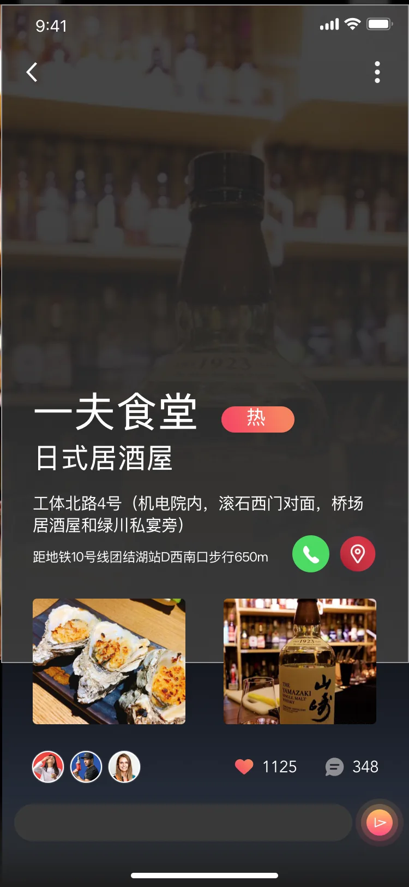
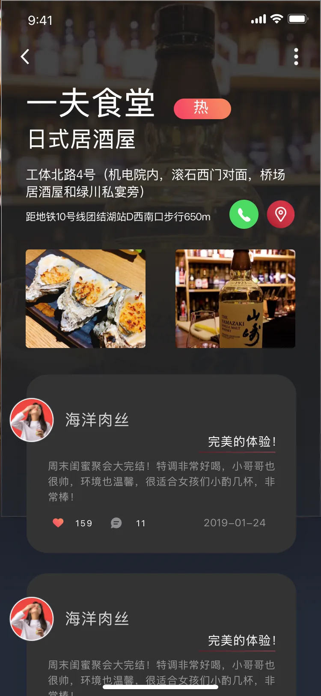

SELECTED CASE / APP UI
下班喝酒 · 社交 App
一组围绕发现附近内容、店铺浏览和好友交流的移动端界面。作品包括发现、收藏、店铺评价、消息、个人主页与设置，呈现从内容探索到账号管理的主要界面路径。
01 / DISCOVER
发现附近的人与店铺
发现页与收藏内容汇集附近动态和店铺入口，支持继续浏览感兴趣的内容。
02 / VENUE
查看店铺信息与评价
店铺详情集中呈现位置、联系和图片，评价页面承接他人反馈。


03 / MESSAGES
从消息列表进入交流
好友与陌生人消息分开呈现，聊天详情中可继续查看分享的店铺推荐。
04 / PROFILE & CONTROL
管理好友、个人内容与设置
好友添加、个人主页、分享、相册与通知隐私设置组成账号管理路径。